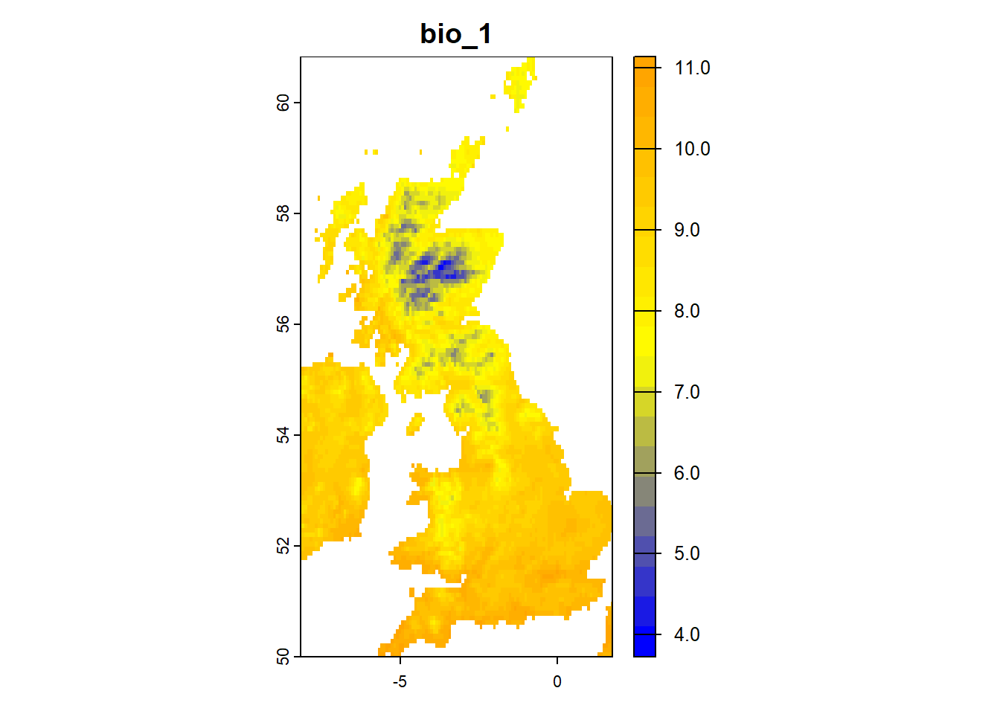
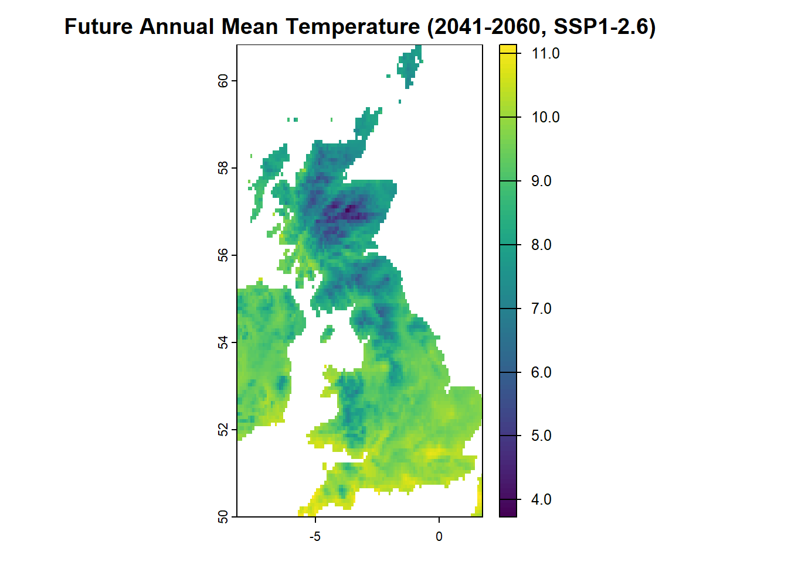

# Load required libraries
library(rnaturalearth)
library(terra)
library(geodata)
# Create a temporary directory to store raster data
tmp_dir <- tempdir() # automatically cleaned up when R session ends
# Download WorldClim bioclimatic variables (1970–2000 baseline)
Clim_extant <- geodata::worldclim_global(var = "bio",
res = 10, # resolution of 10 arc-minutes (~18 km)
path = tmp_dir)
# View variable names
names(Clim_extant)
# UK map
UK_sf <- ne_countries(scale = "medium", country = "United Kingdom", returnclass = "sf")
UK_vect <- terra::vect(UK_sf)
Clim_UK_crop <- terra::crop(Clim_extant, UK_vect)
Clim_UK <- terra::mask(Clim_UK_crop, UK_vect)
# Data is in memory and temporary folder; no permanent files createdEnvironmental Data
In species distribution modelling (SDM) and related ecological applications such as habitat suitability assessments, understanding the relationship between species occurrences and the underlying environmental conditions is essential. Environmental data form the backbone of SDMs, providing the contextual information needed to analyse where species are found and, importantly, where they could be found under different conditions (according to the predictions from the underlying model).
Since SDMs aim not only to identify ecological relationships but also to project these relationships across broader spatial extents or under future environmental scenarios, access to landscape-scale environmental data is critical. Environmental variables of abiotic conditions such as climate, topography, soil, and land cover or commonly of key interest to describe the ecological and spatial constraints that influence species distributions. These variables are often derived from remote sensing products, interpolated climate surfaces, digital elevation models, and in-situ measurements.
Selecting relevant and high-quality environmental predictors is a key step in building robust, interpretable models. Considerations such as spatial and temporal resolution, variable collinearity, and ecological relevance all play a role in shaping model outcomes.
In this part of the workshop, we will:
Explore the main types of environmental datasets commonly used in SDM
Discuss spatial and temporal resolution — and why they matter
Learn how to access, prepare, and manage environmental layers for modelling
Address common challenges such as collinearity, scaling, and data gaps
Understanding your environmental data is just as important as understanding your species data.
Together, they define the basis for making informed, ecologically meaningful predictions about species distributions, be it in the present, the past, and under future scenarios.
NoteRequired R Packages for This Section
Before continuing, make sure the following R packages are installed and loaded:
terra– for working with spatial raster and vector datarnaturalearth– for country/world map boundariesrnaturalearthdata– Natural Earth support dataggplot2– for plottingsf– for handling vector data in simple features (sf) formatgeodata– easy access to global environmental raster layers
1. Climate data
Climate variables are critical predictors in SDMs, as they directly influence species physiology, habitat suitability, and ecological interactions. Commonly used climate variables include temperature (e.g., mean annual, maximum of warmest month), precipitation (e.g., total annual, seasonality), and derived bioclimatic variables.
In R, climate data can be easily accessed, processed, and visualized using a combination of packages and global datasets. One of the most widely used sources is WorldClim, which provides high-resolution global climate layers. You can explore the available variables here. To download and use these data in R, this can be efficiently done with the package. Other sources of climate data include for example the CHELSA database
1.1 Accessing climate data
The geodata package simplifies the process of downloading WorldClim and CHELSA data. As discussed in the section “3. Raster Data in R”, the tera package can be used to crop and mask climate data to the study region to reduce computational load and improve model relevance.
Code to access climate data (already done in data preparation)
Plot climate data
# Define color palette
col_palette <- colorRampPalette(c("blue", "yellow", "orange"))(20)
# Plot the first bioclimatic variable for the UK
plot(Clim_UK[[1]],
main = names(Clim_UK)[1],
col = col_palette)
1.2 Future climate data
Projecting future species distributions under climate change is essential for understanding potential range shifts, extinction risks, and guide future conservation planning. Future climate data provide model inputs that represent different greenhouse gas concentration trajectories over time.
These data are generated by global climate models (GCM) and made available through datasets like WorldClim and CHELSA, which provide downscaled, bias-corrected projections for various future scenarios. Downscaled future climate data from WorldClim v2.1, which includes projections from multiple GCMs can be also accessed with the help of the geodata package. In this workshop, we use CMIP-6 (Coupled Model Intercomparison Project Phase 6) climate projections, which provide simulations of future climate based on various greenhouse gas concentration pathways (known as SSPs). These models incorporate complex physical processes and interactions within the atmosphere, oceans, land surface, and ice.
# Download future climate data (CMIP6 projections for 2041–2060)
# We use bioclimatic variables (bioc) at 5 arc-min resolution (~9 km)
# Scenario: SSP1-2.6 (“Paris Agreement compatible”), GCM = BCC-CSM2-MR
# SSP1: Sustainability pathway – world shifts toward green growth and equity
# Radiative forcing stabilizes at 2.6 W/m² by 2100
Clim_cmip6_2041_2060 <- geodata::cmip6_world(
var = "bioc", # bioclimatic variables
ssp = "126", # SSP1-2.6 scenario
model = "BCC-CSM2-MR", # Global climate model
time = "2041-2060", # target period
res = 5, # resolution (arc-minutes)
path = "data/" # folder to save downloaded files
)
# View variable names
names(Clim_future_cmip6_2041_2060)
# Plot a variable (e.g., future annual mean temperature)
terra::plot(Clim_future_cmip6_2041_2060[[1]])
The figure below shows the projected change in annual mean temperature relative to a historical baseline (1970–2000). The animation cycles through three future periods (2021–2040, 2041–2060, 2061–2080). Each frame represents the spatial pattern of temperature change (in °C) predicted by CMIP-6 for that period, highlighting where and by how much temperatures are expected to increase or decrease in the UK.
NoteChoosing among GCMs and SSPs scenarios
There is no single “best” model or scenario for future climates. Best practice includes:
- Ensemble modelling: Use multiple GCMs to average predictions and estimate uncertainty.
- Scenario comparison: Run projections under different Shared Socioeconomic Pathways (SSP) to capture a range of plausible futures.
- Temporal exploration: Compare mid- and end-century scenarios for temporal trends.
2. Elevation data
Elevation data are available from different sources, the ‘geodata’ package offers a direct download of Shuttle Radar Topography Mission (SRTM) data.
library(geodata)
# Download elevation data
Elev_UK <- geodata::elevation_30s(country = "GB", path = tmp_dir)Error: object 'tmp_dir' not found3. Land cover data
Land cover is an essential environmental predictor in species distribution modelling (SDM), representing the physical surface of the Earth—such as forests, grasslands, wetlands, croplands, and urban areas. It provides crucial information about habitat availability, fragmentation, and human impacts on ecosystems.
In R, land cover data can be accessed and processed using remote sensing-derived datasets and spatial packages.
Accessing Global Land Cover Data
Several global land cover datasets are publicly available, including:
- Copernicus CGLS-LC100: Global land cover maps at 100m spatial resolution
- MODIS MCD12Q1: Global land cover maps at 500m resolution
- ESA WorldCover: Global land cover at 10m resolution
- MODIS NDVI (Normalized Difference Vegetation Index): Satellite-derived vegetation greenness index available at 250m resolution, useful for tracking vegetation health and phenology.
- Sentinel-2 Vegetation Indices: High-resolution (10-60m) vegetation indices including NDVI, EVI, and others, from the European Sentinel-2 mission.
Among these, the ESA WorldCover dataset can be accessed and downloaded using the geodata R package. However, this direct download option is not available for all land cover datasets.
# EDS land cover data (variable selected: trees) for the UK
lc_trees <- geodata::landcover(var = "trees")4. Joining different datasets
In species distribution modelling (SDM) and related geospatial applications in environmental sciences, we often work with multiple types and layers of data, including different environmental variables, species occurrence records, and related metadata.
Before building robust and biologically meaningful models, it is critical to properly prepare and join these datasets. This involves ensuring that environmental raster layers are first aligned and stacked, that is, standardized to the same spatial resolution, extent, and coordinate reference system so that they can be consistently and efficiently used together. Following this, species data and other attributes must be spatially and temporally aligned and joined across formats (e.g., raster versus vector data).
There are two primary types of joins you’ll typically perform: 1. Spatial joins: Linking species occurrences to environmental conditions, for example, by extracting temperature or land cover values at occurrence points. 2. Attribute joins: Merging additional non-spatial data, such as species traits or survey metadata, based on common identifiers.
library(terra)
library(geodata)
# Check CRS and resolution for the two raster files of climate and elevation data
print(crs(Clim_UK))[1] "GEOGCRS[\"WGS 84\",\n ENSEMBLE[\"World Geodetic System 1984 ensemble\",\n MEMBER[\"World Geodetic System 1984 (Transit)\"],\n MEMBER[\"World Geodetic System 1984 (G730)\"],\n MEMBER[\"World Geodetic System 1984 (G873)\"],\n MEMBER[\"World Geodetic System 1984 (G1150)\"],\n MEMBER[\"World Geodetic System 1984 (G1674)\"],\n MEMBER[\"World Geodetic System 1984 (G1762)\"],\n MEMBER[\"World Geodetic System 1984 (G2139)\"],\n ELLIPSOID[\"WGS 84\",6378137,298.257223563,\n LENGTHUNIT[\"metre\",1]],\n ENSEMBLEACCURACY[2.0]],\n PRIMEM[\"Greenwich\",0,\n ANGLEUNIT[\"degree\",0.0174532925199433]],\n CS[ellipsoidal,2],\n AXIS[\"geodetic latitude (Lat)\",north,\n ORDER[1],\n ANGLEUNIT[\"degree\",0.0174532925199433]],\n AXIS[\"geodetic longitude (Lon)\",east,\n ORDER[2],\n ANGLEUNIT[\"degree\",0.0174532925199433]],\n USAGE[\n SCOPE[\"Horizontal component of 3D system.\"],\n AREA[\"World.\"],\n BBOX[-90,-180,90,180]],\n ID[\"EPSG\",4326]]"print(crs(Elev_UK))[1] "GEOGCRS[\"WGS 84\",\n ENSEMBLE[\"World Geodetic System 1984 ensemble\",\n MEMBER[\"World Geodetic System 1984 (Transit)\"],\n MEMBER[\"World Geodetic System 1984 (G730)\"],\n MEMBER[\"World Geodetic System 1984 (G873)\"],\n MEMBER[\"World Geodetic System 1984 (G1150)\"],\n MEMBER[\"World Geodetic System 1984 (G1674)\"],\n MEMBER[\"World Geodetic System 1984 (G1762)\"],\n MEMBER[\"World Geodetic System 1984 (G2139)\"],\n ELLIPSOID[\"WGS 84\",6378137,298.257223563,\n LENGTHUNIT[\"metre\",1]],\n ENSEMBLEACCURACY[2.0]],\n PRIMEM[\"Greenwich\",0,\n ANGLEUNIT[\"degree\",0.0174532925199433]],\n CS[ellipsoidal,2],\n AXIS[\"geodetic latitude (Lat)\",north,\n ORDER[1],\n ANGLEUNIT[\"degree\",0.0174532925199433]],\n AXIS[\"geodetic longitude (Lon)\",east,\n ORDER[2],\n ANGLEUNIT[\"degree\",0.0174532925199433]],\n USAGE[\n SCOPE[\"Horizontal component of 3D system.\"],\n AREA[\"World.\"],\n BBOX[-90,-180,90,180]],\n ID[\"EPSG\",4326]]"# Resample Elev_UK raster to match Clim_UK raster
Elev_UK_aligned <- terra::resample(Elev_UK, Clim_UK, method = "bilinear")
# Crop to common extent
common_extent <- intersect(ext(Clim_UK), ext(Elev_UK_aligned))
Clim_UK_crop2 <- terra::crop(Clim_UK, common_extent)
Elev_UK_crop2 <- terra::crop(Elev_UK_aligned, common_extent)
# Stack layers and name variables
Env_UK_stack <- c(Clim_UK_crop2 , Elev_UK_crop2)
names(Env_UK_stack) <- c(sub("^wc2\\.1_10m_", "", names(Clim_UK)), "elevation")
# Print stack summary
print(Env_UK_stack)class : SpatRaster
size : 130, 119, 20 (nrow, ncol, nlyr)
resolution : 0.08333333, 0.08333333 (x, y)
extent : -8.166667, 1.75, 50, 60.83333 (xmin, xmax, ymin, ymax)
coord. ref. : lon/lat WGS 84 (EPSG:4326)
sources : Clim_UK.tif (19 layers)
memory
names : bio_1, bio_2, bio_3, bio_4, bio_5, bio_6, ...
min values : 3.73125, 2.468750, 26.61725, 244.1159, 13.000, -3.735, ...
max values : 11.13333, 8.602083, 42.87903, 507.7567, 23.302, 5.600, ...
NoteExercises: Exploring environmental data
Map climate variables across a region:
Usegeodata::worldclim_global()to download bioclimatic variables. Crop to a country of your choice and plot maps of temperature and precipitation. What spatial patterns do you observe?Extract climate at occurrence points:
Useterra::extract()to get climate and elevation values at species occurrence points. Plot environmental gradients (e.g., temp vs. elevation). How might these relate to the species’ ecology?Compare present vs. future climate:
Extract current and CMIP6 future climate (e.g.,bio1) at occurrence locations. Calculate and map differences. Where is the largest projected change?